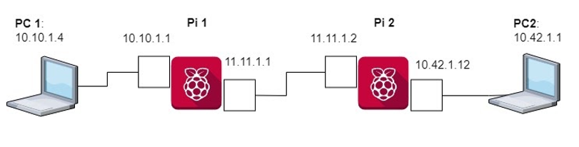
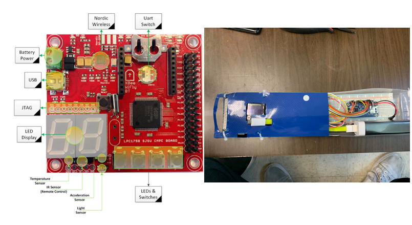

Projects
Projects
Just a couple interesting projects that I want to share with you.

MyUniversity, School Portal Web Application
Worked alongside a team of three to create a school web application similar to MySJSU but with a more intuitive user interface. Developed the infrastructure via AWS & Docker
to make the project publicly acessible. It allows students to check their personal information, academic information, and financial information and gives them access to useful
tools such as maps, news, weather, and calendar events all in one simple, clean, and intuitive package.
NutriVision
Worked with two other team members to create a food recognition app that shows nutrition facts at the tip of your fingers. Just take a photo of your food and NutriVision will
immediately tell you the food's calories, fat, sodium, carbs, fiber, sugar, and protein content. Front-end made in HTML5 and CSS3, server made using Flask and Python
(hosted on Amazon EC2), and APIs used include Google Cloud Vision and Nutritionix.

Self-Driving Rover
Worked with five other team members to create self-driving robot that simulated care-bots. My main contribution was developing code in C and implementing IR sensors, bumper switches,
servo motors, and ultrasonic sensors.
Self-Navigating Platform, Senior Design Project
Worked with a group for university senior design project to develop a platform capable of carrying baggage in airport terminals. Project involved integrating our own hardware
onto a pre-existing RC Car platform, writing software to control the motors, and developing a computer vision script in OpenCV to autonomously follow the user.

Microprocessor with Integrated Memory and I/O
Designed and implemented an 8-bit microprocessor system which integrated a CPU, RAM (external memory), and a keyboard. Developed driver code in C++.

Amazon Web Scraper
Built a web scraper that would parse Amazon’s website for information and related products matching the user’s search query. Utilized Python for development, Selenium
for scraping and testing, and front end technologies to create a UI to display the results.
Slack Bot
Developed a Slack Chat Bot that scrapes company cafeteria data and sends automatic daily messages on a dedicated slack channel to display lunch menu items for employees.

Raspberry Pi Intranetwork
Created an intranet with Raspberry Pis acting as routers, allowing the user to ping across various subnetworks. The Pis had to be programmed and configured in a certain way in
combination with a routing table in order to for the system to function properly.

Minus Minus C
Worked with two others to create a programming language that resembles C but with added functionality from Python. The project was implemented in C++ and includes features such
as if-elif-else statements, For-in loops, function and printf support, and integer bit indexing and setting.

Embedded MP3 Player
Worked with three others to make an MP3 Player using LPC1758 microcontroller, VS1053b Audio Decoder, and an LCD display. The project involved creating drivers for SPI and UART in
C++. Includes features such as reading from an SD card, IR Remote for sending input, auxilary input, external battery, displaying song information from tags, and
interactive menu screens.